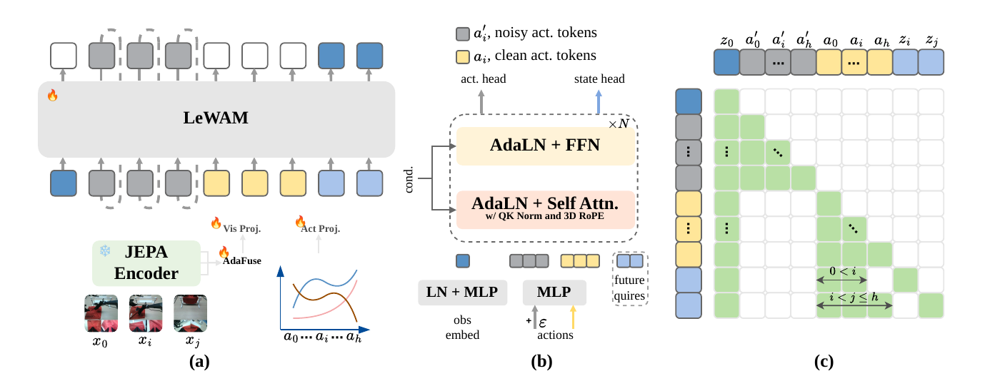
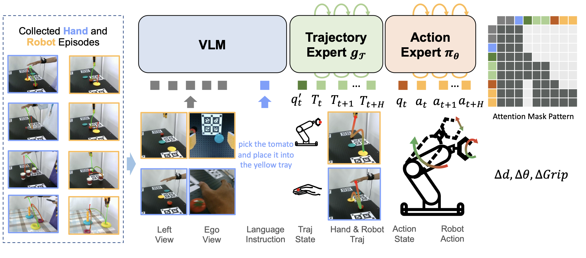
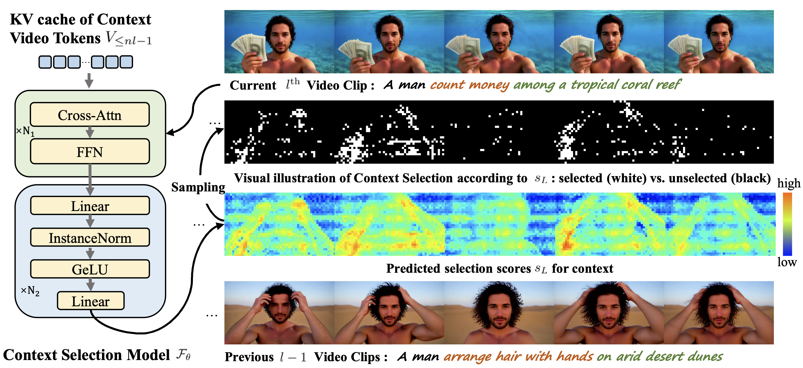
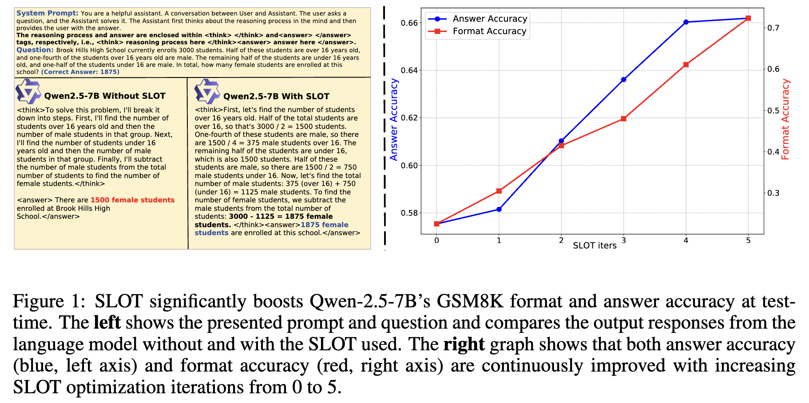

|
Xueji Fang I am a Computer Science Ph.D. candidate in a joint program at Zhejiang University and Westlake University, advised by Dr. Guo-Jun Qi (Fellow of IEEE and IAPR). I also work as a research intern at Baidu BMU, where I am advised by Dr. Jingdong Wang (Fellow of CAE, IEEE and IAPR). |

|
Research
My research interests have shifted from AIGC to embodied intelligence. I see signs of AI moving from content generation toward interaction with environments. In the digital world, this shift is taking shape through coding agents. In the physical world, it is taking shape through embodied intelligence. Trying Astra on RoboDojo made me wonder whether the "GPT moment" for embodied intelligence might come from GPT itself. This possibility motivates my long-term goal of contributing to the development of Physical AGI!
Publications & Projects
|
 |
Latent evolving World Action Model
Xueji Fang, Boqiang Duan, Hua Wu, Jingdong Wang†, Guo-Jun Qi† arXiv: 2609.27455, 2026 |
|
GPT-6 Astra on the RoboDojo Benchmark
Sep. 6, 2026 Across several simulated RoboDojo tasks, Astra interprets visual scenes and turns them into executable robot actions. This combination of perception and control makes the potential of general-purpose models for embodied intelligence more concrete. |
 |
Traj2Action: A Co-Denoising Framework for Trajectory-Guided Human-to-Robot Skill Transfer
Han Zhou, Jinjin Cao, Liyuan Ma, Xueji Fang, Guo-Jun Qi arXiv: 2510.00491, 2025 |
 |
InfLVG: Reinforce Inference-Time Consistent Long Video Generation with GRPO
Xueji Fang, Liyuan Ma, Zhiyang Chen, Mingyuan Zhou, Guo-Jun Qi arXiv: 2505.17574, 2025 |
 |
SLOT: Sample-specific Language Model Optimization at Test-time
Yang Hu, Xingyu Zhang, Xueji Fang, Zhiyang Chen, Xiao Wang, Huatian Zhang, Guo-Jun Qi arXiv: 2505.12392, 2025 |

{kind=link}
|
A Text-to-Video Foundation Model Trained from Scratch
Main contributor, working with collaborators at MAPLE Lab Trained a T2V-DiT from scratch on 30M+ curated clips. Training began with 240 x 320 text-to-image generation before introducing temporal modeling and scaling to 29-frame videos at 480 x 640. Research demo, 2025 |
|
FocusDiT: Masking Queries in Diffusion Transformers for Fine-grained Image Generation
Xueji Fang, Liyuan Ma, Jianhao Zeng, Jinjin Cao, Mingyuan Zhou, Guo-Jun Qi arXiv: 2606.02090, 2026 |
 |
Equilibrated Diffusion: Frequency-aware Textual Embedding for Equilibrated Image Customization
Liyuan Ma, Xueji Fang, Guo-Jun Qi ACM MM, 2024 (Oral) |
Experience
|
Baidu Inc. Base Model Unit (BMU)Feb. 2026–Present
Research Intern · Beijing
|
|
|
Westlake University MAPLE LabFeb. 2024–Sep. 2024
Visiting Student · Hangzhou
|
|
|
OPPO Research Institute YIWEI LabJun. 2023–Feb. 2024
Research Intern · Shanghai
|